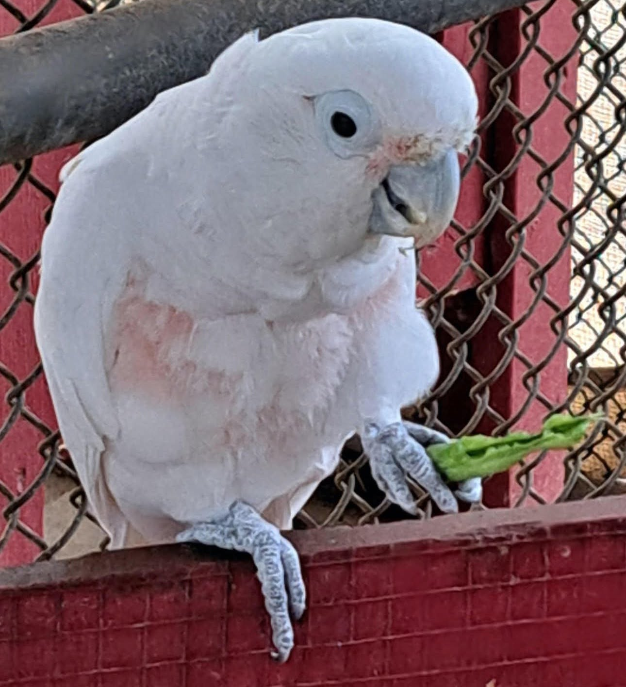
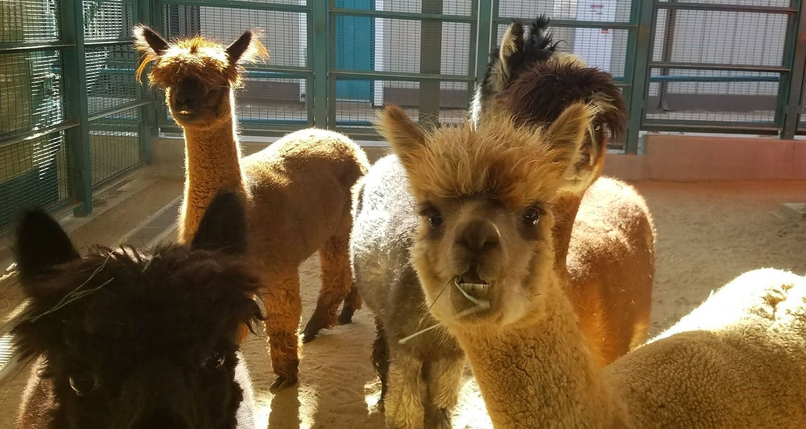
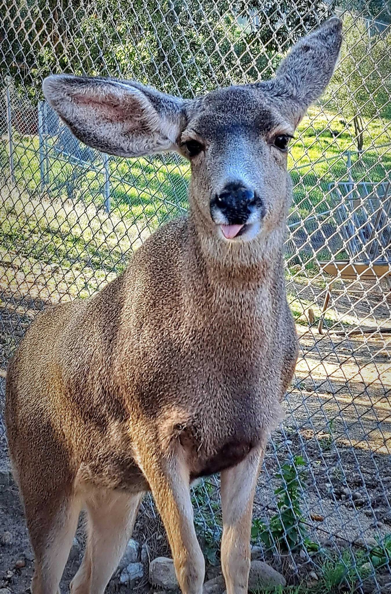
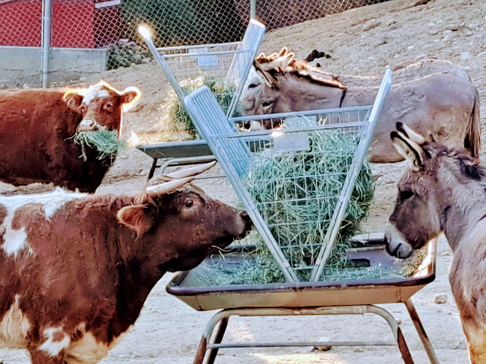

The Animal Barnyard
One of the most beloved areas of the park, the Barnyard offers a delightful, up-close encounter with a wonderful variety of farm animals. From friendly farm critters to exotic birds, a walk through the Barnyard is a highlight for visitors of all ages.

Casper
Munching happily on a crisp green bean snack.

The Alpaca Crew
Always ready to strike a pose with their fantastic hairdos!

Abby
Our curious Mule Deer showing off her signature ears.

Lunch Time
Sharing is caring at the communal hay feeder.
William S. Hart himself had a legendary love for animals, often featured in his films alongside his beloved horses and mule. We carry on that legacy today by providing dedicated care to the Barnyard’s residents. Interested in helping us continue this special tradition? The Barnyard relies on the help of dedicated volunteers for its horses, donkeys, chickens, and more.
Visit SantaClaritaVolunteers.com to sign up and join the team!